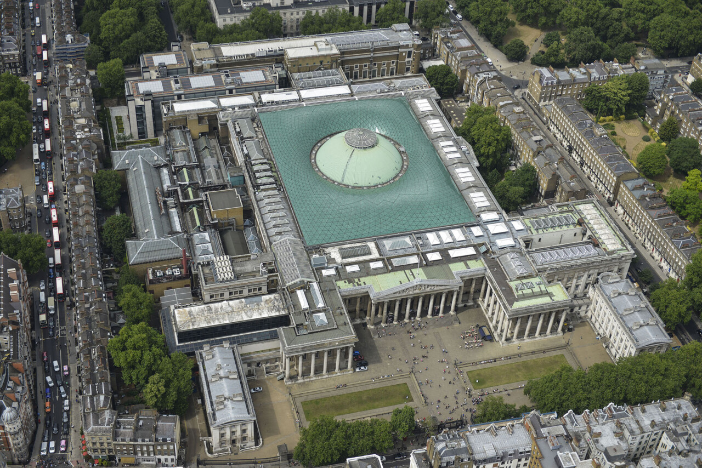
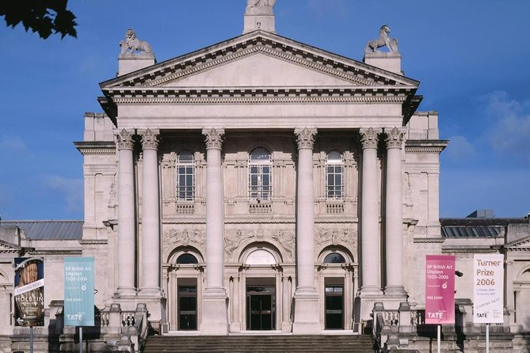
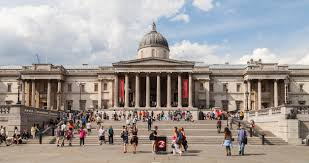

| British Museum | Tate Britain | The National Gallery |
|---|
El Museo Británico se fundó en 1735 y alberga antigüedades procedentes de Egipto, Roma, Grecia, Oriente Próximo y Asia. El edificio se empezó a construir en 1824, fue diseñado por Robert Smirke y hasta 1997 también era la sede de la Biblioteca Británica. Seguramente sólo haya dos museos en el mundo comparables en la variedad y riqueza de sus colecciones: el Louvre de París y el Metropolitan de Nueva York. La entrada es gratuita.
En 1897 se abrió al público, al sur de Westminster, la Galería Nacional de Arte Británico, gracias al dinero aportado por Henry Tate, magnate del azúcar y coleccionista. En 1932 el museo pasó a llamarse Tate Gallery. En 2000 el museo inaguró la Tate Modern, una nueva sede situada frente a la Catedral de San Pablo. La Tate Gallery pasó a llamarse Tate Britain y alberga importantes colecciones como la de Turner, pero también obras de arte no británicas, como uno de los célebres Besos de Rodin.
En 1805, cerca del Cabo de Trafalgar, a medio camino entre Cádiz y Gibraltar, tuvo lugar una crucial batalla naval entre las flotas inglesa y franco-española. Tras ella Napoleón tuvo que renunciar para siempre a la invasión de Inglaterra, que dominaría los mares durante los siguientes cien años. Esta plaza conmemora esa victoria y está presidida por una gran columna sobre la que se encuentra un estatua de Nelson, que dirigió la flota inglesa en la batalla y falleció en ella. Al norte de la plaza se encuentra la National Gallery, la más importante colección inglesa de pintura de los siglos XV al XIX.
